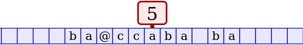

About the Turing Machine Simulation
The web app TM.html implements simulated Turing Machines. A Turing Machine is a very simple abstract model of computation. The machine has an infinite tape that is divided into cells (or squares). Each cell contains a symbol (or character) chosen from some small set of possible symbols. Most of the cells are blank, that is, they contain the blank symbol. The number of non-blank cells is finite. The machine is located on one of the cells, and it can only "see" the symbol in the cell where it is located. It can write a new value to that cell. It can move left or right on the tape, one cell at a time. The machine is in one of a fixed, finite number of possible states. One of the states is the halt state, which is shown in this simulation as "h". The other states are numbered 0, 1, 2, up to some maximum. Here is how the program shows a Turing Machine in state 5 on a tape containing the symbols "ba@ccaba ba" (but remember that the tape should be thought of as extending infinitely to the left and to the right):

A Turing Machine has a table of rules. The table of rules is the program for the machine. A rule tells the machine what action to take when it is in a given old state and the cell where it is located contains a given old symbol. The action specifies the new symbol to be placed in the cell (possibly the same as the old symbol), the new state that the machine should change to (possibly the same as the old state), and the direction in which it should move. The direction can be "L" to tell the machine to move left, "R" to tell the machine to move right, or "S" to tell the machine to stay in the same place. There are no rules for what the machine should do when it is in the halt state, since when it is in the halt state, it is done computing.
In the simulation program, a Turing Machine always starts in state number zero. It computes by following the applicable rule at each step, and it is done computing when it executes a rule that tells it to go into the halt state. The machine will also stop if it is in a situation for which there is no applicable rule, and you will see a message above the machine saying that no rule is available. A table of rules for the current Turing Machine is shown in the bottom right section of the web page.
See the Wikipedia article for more information about Turing Machines.
Using the Program
When TM.html is first loaded, it shows an example Turing Machine that can add one to a binary number. A binary number (that is, a sequence of zeros and ones) must be written on the tape, and the Turing Machine must be positioned on the right end of that number. Click the "Run" button, and the machine will add one to the binary number. It will then return to its original position and halt. To run it again, first click the button that says "Reset State to Zero" to return the machine to its initial state, then click "Run". There is a "Run Speed" pop-up menu that allows you to change the delay between steps in the program. As alternative to "Run" you can click the "Step" button, which executes just one rule in the machine's program. There is also a "Step Back" button that will undo one step in the execution; you can use it to "unwind" part of a computation so that you can replay it. "Step Back" can undo up to 100 steps.
You can use the mouse (or your finger on a touch screen) to drag the machine onto a different cell of the tape. You can also drag the tape back and forth, carrying the machine with it.
If you are using a mouse (but not a touch screen), you can change the machine's state by clicking the machine and then typing the new state. You will see a bright cyan-colored border around the state number when it is ready for input. Similarly, if you click one of the cells of the tape, a cyan box will be drawn around the cell, and you can type a new symbol for the cell. The cyan highlight will move one cell to the right, so you can type an entire string of symbols onto the tape. (There are also an input box and a button labeled "Set tape contents to:" that you can use to change the contents of the tape.) If you are using a mouse (but not a touch screen), you can also edit an existing rule by clicking a value in the "New State", "New Symbol", or "Move" column in the table of rules and then typing a new value.
The "Rule Editor" can be used to create or modify Turing Machine programs. The editor has five pop-up menus that contain the data for one rule. If a rule already exists for the "OldState" and "OldSymbol" in the first two pop-up menus, then the corresponding rule is highlighted with a magenta border in the table of rules, and the button to the right of the menu says "Change Rule". If no rule currently exists for the "OldState" and "OldSymbol", then the button says "Create Rule". As you step through the program, or as it runs at a slow enough speed, the Rule Editor is set to show the currently applicable rule. You can also click one of the rules in the table of rules to select it for editing.
Note that in the "OldSymbol" and "NewSymbol" menus, the blank character is shown as "#" to make it visible. The same is true in the "Old Symbol" and "New Symbol" columns in the table of rules.
The old symbol in a rule can also be a wildcard symbol, represented as "other" in the menu and in the table of rules. The wildcard matches any symbol that is not covered by another rule for the same state. The new symbol can also be a wildcard, represented as "same" in the menu and in the table of rules. When used for the new symbol, the wildcard means that the machine should not change the current symbol in the cell.
The "New Turing Machine" button lets you start creating a Turing machine from scratch. It will pop up a dialog where you can enter a name and description of the machine. You can also specify the maximum state number that can be used in the machine and the set of symbols that can occur on its tape. The only way to change all of this information after creating the machine is with the "Show Edit/Import/Export" button.
Advice about making new Turing machines: Start by clicking "New Turing Machine" to create a new machine with an empty table of rules. Add some symbols to the tape, and set the initial position of the machine on the tape. If you then click "Step", no applicable rule will exist, but the Rule Editor will be set up to create the required rule. Set the pop-up menus in the Rule Editor for NewSymbol, NewState, and Direction to the appropriate values for the machine that you want to create, and click "Create Rule". Clicking the "Step" button will apply that rule — and will configure the Rule Editor for the next step. Continue in this way, clicking "Step" and creating rules when needed. If you get confused, use the "Step Back" button to back up a few steps in the computation. Eventually, you should have a machine that works for the input that you gave it. Then try it on a variety of different inputs, to make sure that you have all the cases covered. That might require creating more rules.
Saving your work: The "Save file" button lets you save the current Turing machine and its tape to a local file on your computer. Files saved in this way can be reloaded into the app using the "Load file" button. The mechanism used for working with local files will depend on what web browser you are using. In many browsers, it will look like saving and opening files in other applications. But in some browsers, when you save a file, it will look like you are downloading a file from the Internet, and loading a file can look like uploading a file.
The "Show Edit/Import/Export" button lets you edit the specification of the current machine. It also provides an alternative way to work with local files. The machine's specification is in a data format called "JSON." Clicking the button will pop up a dialog where you can view and edit Turing machine specifications in JSON format. To see the JSON representation for the current machine, click the "Grab Current Example" button in the dialog. You can edit the description and click the "Apply" button to apply your changes to the current machine. To save the machine to a file, you can copy the machine description out of the dialog box and into a text editor window using copy-and-paste. Then, you can save the description from the text editor into a file. To load a saved machine description back into the program, you can open the file in a text editor, copy-and-paste the description into the Input/Export dialog box, and click the "Apply" button.
The Sample Machines
Seven example machines are available in a pop-up menu under the button labeled "Install Example:". To load one, select it in the menu then click the button. The sample machines are as follows:
- Binary Increment — This machine is installed when the page is first loaded. The tape should contain a binary number (consisting of zeros and ones), and the machine should start on the rightmost symbol in the number. When it runs, the machine adds one to the binary number, returns to its original position, and halts. Try modifying the rule for Old State = 1 and Old Symbol = # so that the machine goes into state 0 instead of halting. With that modification, the machine will run forever, counting in binary.
- Count in Base 10 — The tape for this machine contains an ordinary base-10 number, consisting of digits 0 through 9, with the machine positioned on the right end of the number. The machine adds 1 to the number, then returns to its initial state and position, and then repeats the same process forever. That is, it counts in base 10 and never halts. Note that this example uses a different set of possible symbols from the other examples.
- Copy abc — The tape for this machine should contain a string made up of a's, b's and c's, and the machine should be positioned on the left end of the string. When it runs, the machine makes a copy of its input string and halts on the left end of the copy.
- Delete a's — The tape should contain a string of a's, b's, and c's, and the Turing Machine should be positioned on the right end of the string. The machine will remove all the a's from the string, leaving the b's and c's in their original order and will halt on the right end of the modified string.
- Binary Addition — The tape contains two binary numbers, separated by a space, with the Turing Machine positioned on the right end of the second number. The machine computes the sum of the two numbers. In the process, the second number number is erased, and the first number is replaced by the sum of the two input numbers. The machine halts on the right end of the sum.
- Binary Multiplication — The tape contains two binary numbers, separated by a space, with the Turing Machine positioned on the right end of the second number. The machine computes the product of the two numbers. In the process, both numbers are erased, and the product is created to the left of the two original numbers. At the end, the machine is positioned on the right end of the product.
- 3N+1 with Counter — A "3N+1 sequence" (also called a "hailstone sequence") is produced by starting with some integer and performing the following operation over and over: If the number is even, divide the number by 2, and if the number is odd, multiply the number by 3 and add 1. Stop if the result is equal to 1. For example, the 3N+1 sequence starting from 3 is: 3, 10, 5, 16, 8, 4, 2, 1. This machine should be started with a tape that contains a zero, followed by a blank space, followed by a string of x's. The machine should be positioned on the blank square between the zero and the x's. If the number of x's is even, the machine erases half of the x's (that is, it divides the number of x's by 2); if the number is odd, it adds two x's for each existing x plus one additional x (that is, it multiplies the number of x's by 3 and adds 1). Except, if there is only one x, then the machine erases the x and halts. In cases when it does not halt, it adds 1 to the binary number that is to the left of the x's. It then repeats the process, halting when the number of x's has been reduced to 1. Thus, the machine computes a 3N+1 sequence, with the numbers in the sequence represented by the number of x's in each phase of the computation. And it counts the number of steps in the sequence (in binary). Will this machine always halt, no matter how many x's it is given as input? No one knows the answer to this question — but it is known that the machine will halt if the number of x's is less than 260. (See this Wikipedia article.)